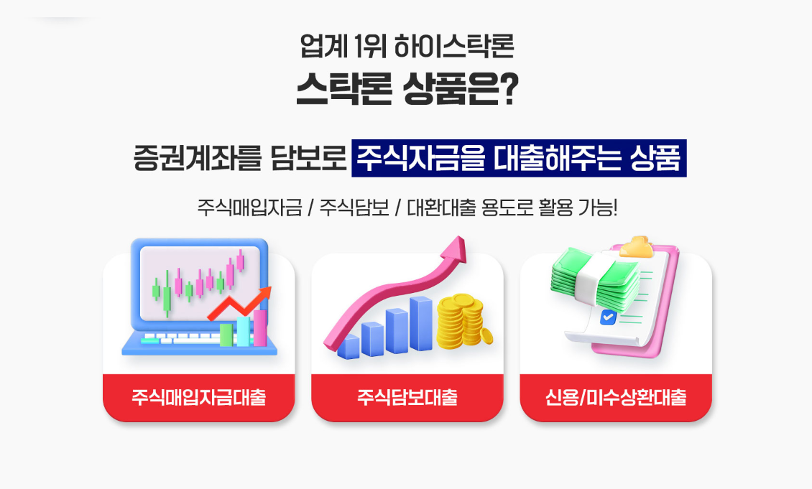

주식자금대출 하이스탁론 관련 정보를 알아보고 있다면 단순히 이용 가능한 금액만 확인하기보다는 금리와 상환 방식, 이용 조건과 위험 요소를 함께 살펴보는 것이 중요합니다. 특히 대출금을 활용해 투자하는 경우 시장 상황에 따라 손실이 발생하더라도 대출 원금과 이자에 대한 상환 의무는 계속될 수 있다는 점을 고려해야 합니다.
주식자금대출은 어떤 구조인지 먼저 확인하세요
주식 투자와 관련된 대출 상품은 제공 방식과 조건이 서로 다를 수 있습니다. 이용 가능한 대상과 한도, 금리, 기간 및 상환 방식 등을 상품별로 확인한 뒤 자신의 상황에 적합한지 판단하는 것이 중요합니다.
특정 금융상품이나 서비스의 이름이 같더라도 실제 계약 조건은 신청자의 상황과 제공기관의 심사 결과 등에 따라 달라질 수 있으므로 상담 단계에서 세부 내용을 확인해야 합니다.
금리와 상환 조건을 함께 비교해보세요
대출을 이용할 때는 이용 가능한 한도뿐 아니라 적용 금리와 전체 상환 금액, 상환 기간 등을 함께 확인해야 합니다.
또한 중도상환과 관련된 조건이나 별도의 비용이 있는지, 금리가 변동될 수 있는 구조인지 등도 계약 전에 확인하는 것이 좋습니다.

금리
실제 적용되는 금리와 변동 가능성을 확인해보세요.
상환 방식
원금과 이자를 어떤 방식으로 상환하는지 살펴보세요.
이용 기간
대출 기간과 연장 가능 여부 등 세부 조건을 확인하세요.
추가 비용
별도 비용이나 중도상환 관련 조건이 있는지 확인해보세요.
대출을 활용한 투자의 위험을 충분히 고려하세요
주식 투자는 시장 상황에 따라 투자 원금의 손실이 발생할 수 있습니다. 특히 대출을 이용해 투자하는 경우 투자 손실과 별개로 대출금과 이자를 상환해야 하는 부담이 남을 수 있습니다.
따라서 기대 수익만을 기준으로 판단하기보다는 시장 하락이나 예상하지 못한 손실이 발생했을 때에도 상환을 감당할 수 있는지를 신중하게 판단하는 것이 중요합니다.
신청 전 실제 계약 조건을 다시 확인하세요
금융상품이나 대출 서비스를 이용할 때는 광고나 안내 문구만을 기준으로 결정하기보다는 실제 계약서와 상품 설명을 확인하는 것이 중요합니다.
자신에게 적용되는 금리와 한도, 상환 방식과 기간 등을 확인하고 상품 제공기관과 계약 상대방이 누구인지도 명확히 살펴보세요.